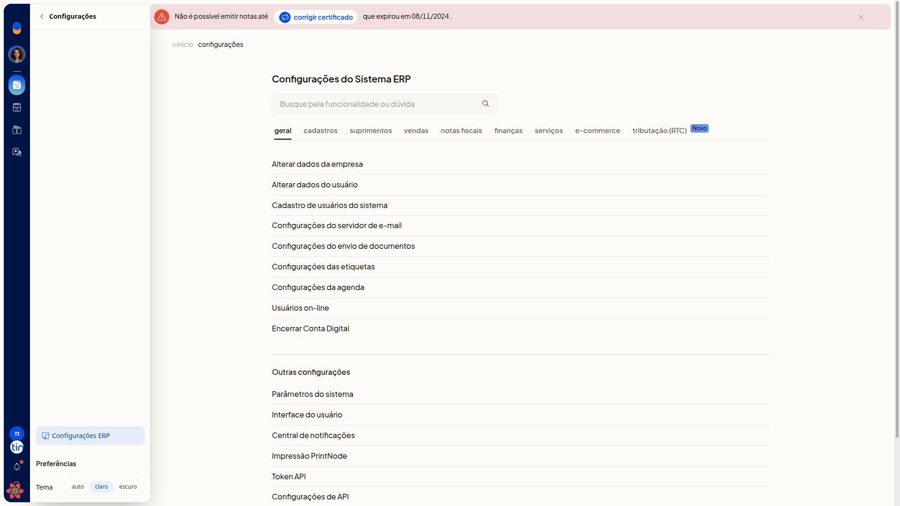
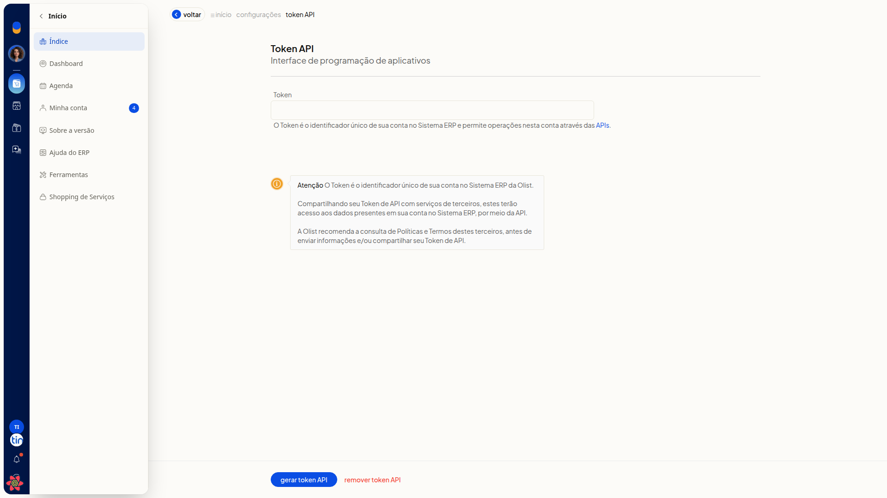

Atualizar custos de produtos em massa pela API
Pré-requisitos
- Token da conta para autenticar as chamadas em HTTP Bearer.
- Identificador numérico (idProduto) dos produtos já cadastrados.
Importante
- Essas operações usam caminhos próprios de custo, separados da atualização de produto, kit, fabricado ou variação.
Instruções
Confirme o token da conta antes das chamadas.
-
Acesse Configurações > Configurações ERP.

-
Na seção Outras configurações, abra Token API.

-
Leia o campo Token para autenticar as chamadas.
-
Se o campo Token estiver vazio, clique em Gerar Token API.
Incluir custos de produtos distintos
Esta chamada inclui o custo de produtos diferentes de uma só vez.
- Autentique a chamada enviando o token da conta como HTTP Bearer (bearerAuth).
- Na chamada POST /produtos/custos, informe os campos abaixo.
Campos obrigatórios
- idProduto: inteiro do produto, por exemplo 501
- precoCusto: número do preço de custo, por exemplo 15.90
- custoMedio: número do custo médio, por exemplo 14.20
Campos opcionais
- data
- saldoAtual: número do saldo atual, por exemplo 10
- saldoAnterior: número do saldo anterior, por exemplo 8
- impostosRecuperaveis: número de impostos recuperáveis, por exemplo 1.50
- precoVenda: número do preço de venda, por exemplo 29.90
- Envie a chamada. A resposta documentada é 201 Created.
Incluir custo em todas as variações
Esta chamada lança o mesmo preço de custo e o mesmo custo médio em todas as variações de um produto.
- Autentique a chamada enviando o token da conta como HTTP Bearer (bearerAuth).
- Monte POST /produtos/{idProduto}/variacoes/custos e substitua idProduto pelo identificador inteiro do produto, por exemplo 501.
- Informe precoCusto e custoMedio. Os dois são obrigatórios e numéricos, por exemplo 15.90 e 14.20.
- Envie a chamada. A resposta documentada é 201 Created.
Resultado
A inclusão de custos de produtos distintos e a inclusão do mesmo custo em todas as variações respondem 201 Created.